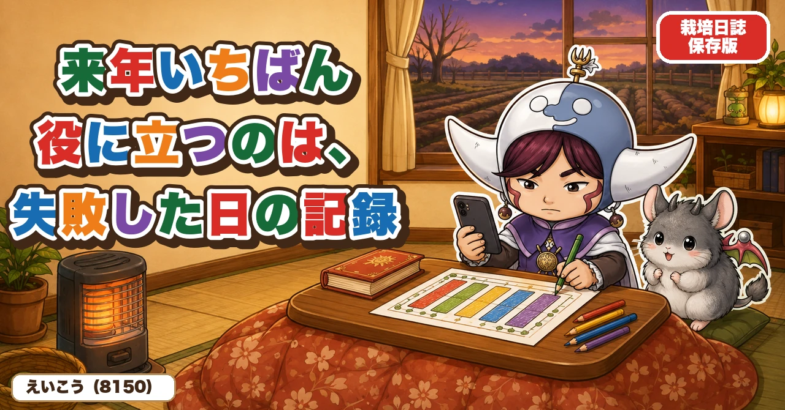
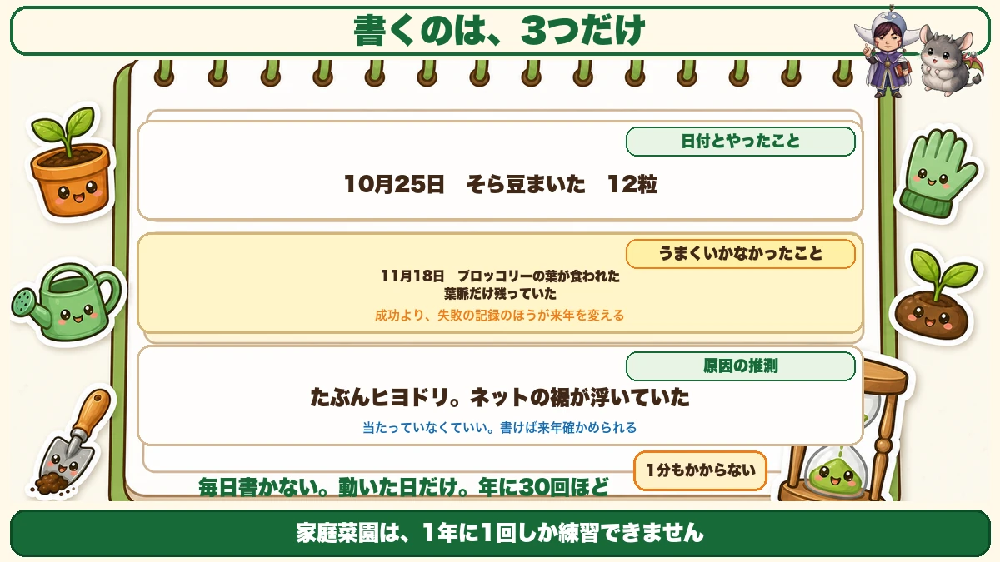
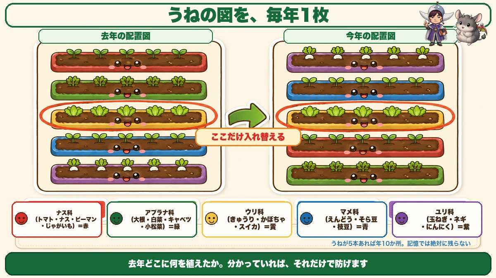
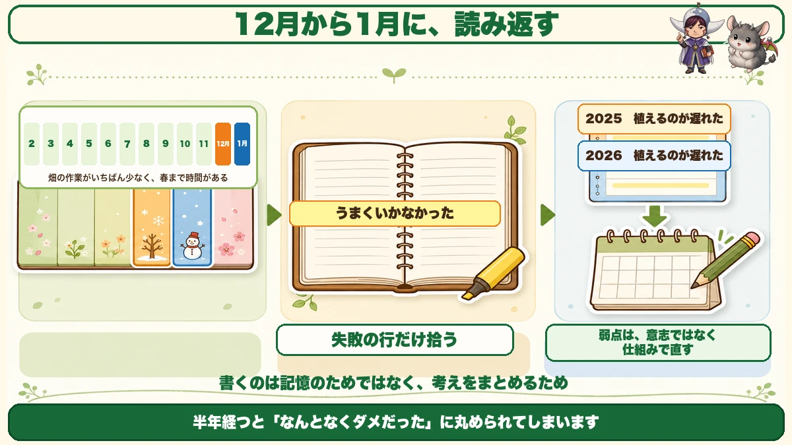

来年いちばん役に立つのは、失敗した日の記録です📔 3行でいい

📔「去年、いつ種をまいたか覚えていません」
📔「同じ失敗を、毎年くり返している気がします」
📔「日記をつけようとしたけど、3日で止まりました」
どうも、8150（えいこう）です🌱 家庭菜園歴8年、理科の教員免許を持っていて、有機・無農薬で野菜を育てています。
今年もお付き合いいただき、ありがとうございました。今日は、1年の締めくくりの話です。
先に、この記事でいちばん言いたいことを言っておきますね。
★家庭菜園は、1年に1回しか練習できません。
トマトを作れるのは、1年に1回です。★8年やっていても、トマトの経験は8回だけ。これは、どれだけ本を読んでも変わりません。
だからこそ★記録が、そのまま実力になります。
書くのは、3つだけです

毎日書かなくていい
日記のつもりで始めると、まず続きません。私も何度も挫折しました。
★書くのは、動いた日だけでいいです。まいた日、植えた日、穫った日、そして何かがおかしかった日。
年間で30回か40回くらいです。★毎日ではありません。
① 日付と、やったこと
★「10月25日 そら豆まいた 12粒」
これだけです。品種名まで書けたら理想ですが、なくても構いません。
★日付が残っているだけで、来年の計画が立ちます。
② うまくいかなかったこと
ここが、いちばん価値のある行です。
★「11月18日 ブロッコリーの葉が食われた 葉脈だけ残っていた」
うまくいった記録より、★うまくいかなかった記録のほうが、来年を変えます。
★成功は再現しにくいですが、失敗は避けられるからです。
③ 原因の推測
そして、いちばん大事な1行。
★「たぶんヒヨドリ。ネットの裾が浮いていた」
当たっていなくて構いません。★書いておくと、来年その仮説を確かめられます。書かなければ、また同じところで悩みます。
★3行で終わりです。1分もかかりません。
うねの図を、1枚だけ描く

これが連作障害を防ぎます
文字より効くのが★うねの配置図です。
紙に、うねを長方形で描いて、★どこに何を植えたかを書き込むだけ。それを毎年1枚ずつ残します。
なぜ効くのか
同じ場所に同じ科の野菜を続けて作ると、★その野菜を好む菌やセンチュウが土にたまります。これが連作障害です。
避けるには、★去年どこに何を植えたか分かっていればいい。それだけです。
ところが★これが記憶ではまず残りません。うねが5本あれば、5×2シーズンで10か所です。1年経つと、絶対に思い出せません。
科で色を塗ると分かりやすい
ひと工夫として、★科ごとに色を変えて塗ると、ひと目で分かります。
- ナス科（トマト・ナス・ピーマン・じゃがいも） … 赤
- アブラナ科（大根・白菜・キャベツ・小松菜） … 緑
- ウリ科（きゅうり・かぼちゃ・スイカ） … 黄
- マメ科（えんどう・そら豆・枝豆） … 青
- ユリ科（玉ねぎ・ネギ・にんにく） … 紫
★去年と同じ色が同じうねに来ていたら、そこだけ入れ替える。作付け計画が、これでほぼ終わります。
どこに書くか
続いた方法だけ書きます
私は★スマホのメモ帳に落ち着きました。
理由は★畑にいるときに書けるからです。ノートは家にあります。畑で起きたことは、家に帰るまでに半分忘れます。
写真も同じ場所に残せます。★葉が食われた状態を1枚撮っておくと、来年見返したときに一発で思い出せます。
紙のほうがいい人へ
紙が好きな方は、★カレンダーで十分です。
日めくりではなく、★1か月が1枚に見えるタイプ。まいた日に丸をつけて、余白に一言書く。
★1年分並べると、自分の畑の暦ができます。
1年に1回だけ、読み返す

冬が、その時間です
書いた記録は、★読み返さないと意味がありません。
読み返すのに向いているのが★12月から1月です。畑の作業がいちばん少なく、次の春までに時間があります。
見るのは、失敗の行だけ
全部読む必要はありません。★「うまくいかなかった」と書いた行だけを拾ってください。
そして★同じ内容が2年続いていたら、そこが自分の弱点です。
私の場合は★「植えるのが遅れた」が何年も並んでいました。それが分かってから、まく日をカレンダーに先に書き込むようになりました。★弱点は、意志ではなく仕組みで直すほうが早いです。
学ぶ：記録が「経験」に変わるしくみ🔬
理科というより、学び方の話です。
人が何かを覚えるとき、★体験しただけでは記憶に残りにくいことが分かっています。
残るのは★体験を言葉にしたときです。
「葉が食われた」という出来事を、★「ヒヨドリだと思う。裾が浮いていたから」と言葉にする。この瞬間に、出来事が知識に変わります。
★書くという作業は、記憶のためではなく、考えをまとめるためにあります。
もうひとつ。★人は、うまくいった理由より、うまくいかなかった理由のほうを正確に覚えられません。
失敗すると、その場では強く印象に残ります。★でも半年経つと「なんとなくダメだった」に丸められてしまう。原因の細部から先に消えます。
★だから、失敗した日に3行だけ書く。半年後の自分のために、細部を残しておくんです。
お子さんと一緒なら、★育てた野菜の絵を1枚描いて、日付を書いて残してみてください。★来年の同じ日に見比べると、育ち方の違いがはっきり分かります。それも立派な記録です。
まとめ
ここまで読んでくださって、ありがとうございました。
1年間、お読みいただきありがとうございました。最後に、来年のための3行の話をまとめます。
- ★家庭菜園は1年に1回しか練習できない。だから記録がそのまま実力になる
- ★毎日書かない。動いた日だけでいい。年に30回ほど
- ★書くのは3つ。日付とやったこと、うまくいかなかったこと、原因の推測
- ★原因は当たっていなくていい。書けば来年確かめられる
- ★うねの配置図を毎年1枚。これが連作障害をいちばん確実に防ぐ
- ★科ごとに色を塗ると、去年との重なりがひと目で分かる
- ★書く場所は畑で開けるもの。スマホのメモか、月めくりカレンダー
- ★読み返すのは12月から1月。失敗の行だけ拾う
- ★同じ失敗が2年続いていたら、それが弱点。意志ではなく仕組みで直す
全部やろうとしなくて大丈夫です。まずは★今年いちばんうまくいかなかったことを、1行だけ書いてみてください。それが来年の畑を変えます📔
次回からは、また野菜の話に戻ります。まずはピーマン。★実が小さくなる原因が、肥料ではなかったという話をします🫑
移植ゴテ
記録と一緒に、深さや株間を測る道具があると数字が残せます。目盛りつきを選ぶと日誌が書きやすくなります。


剪定バサミ
作業した日を書き残すなら、まず道具を決めてしまうほうが続きます。毎回同じ道具だと比べられます。

麻ひも
誘引した日を日誌に書いておくと、翌年の目安になります。土に還る素材なので片づけもラクです。
![[商品価格に関しましては、リンクが作成された時点と現時点で情報が変更されている場合がございます。]](https://hbb.afl.rakuten.co.jp/hgb/56bc2b48.a5f55627.56bc2b49.c4ff0d7c/?me_id=1372205&item_id=10005292&pc=https%3A%2F%2Fthumbnail.image.rakuten.co.jp%2F%400_mall%2Faudiofuntech%2Fcabinet%2Fproducts%2Fetc%2Fetc06%2F7052-1.jpg%3F_ex%3D240x240&s=240x240&t=picttext "[商品価格に関しましては、リンクが作成された時点と現時点で情報が変更されている場合がございます。]")